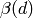
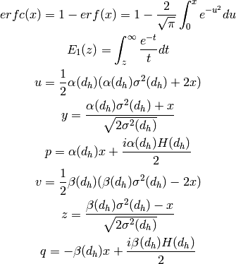
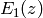
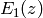

1. This is not an algorithm. However this fit function is a used through the Fit v1 algorithm.
3. ThermalNeutronBk2BkExpConvPVoigt is not a regular peak function to fit individual peaks. It is not allowed to set FWHM or peak centre to this peak function.
A thermal neutron back-to-back exponential convoluted with pseuduo-voigt
peakshape function is indeed a back-to-back exponential convoluted with
pseuduo-voigt peakshape function, while the parameters  are not directly given, but calculated from a set of parameters that
are universal to all peaks in powder diffraction data.
are not directly given, but calculated from a set of parameters that
are universal to all peaks in powder diffraction data.
The purpose to implement this peak shape is to perform Le Bail Fit and other data analysis on time-of-flight powder diffractometers’ data in Mantid. It is the peak shape No. 10 in Fullprof. See Refs. 1.
Thermal neutron back to back exponential convoluted with psuedo voigt peak function is a back to back exponential convoluted with psuedo voigt peak function. Its difference to a regular back to back exponential convoluted with psuedo voigt peak functiont is that it is a function for all peaks in a TOF powder diffraction pattern, but not a single peak.
Furthermore, the purpose to implement this function in Mantid is to refine multiple parameters including crystal sample’s unit cell parameters. Therefore, unit cell lattice parameters are also included in this function.
1. setFWHM() 2. setCentre() : peak centre is determined by a set of parameters including lattice parameter, Dtt1, Dtt1t, Zero, Zerot, Dtt2t, Width and Tcross. Therefore, it is not allowed to set peak centre to this peak function.
A back-to-back exponential convoluted with pseuduo-voigt peakshape function for is defined as

For back-to-back exponential:


For psuedo-voigt

The parameters  and
and  represent the absolute
value of the exponential rise and decay constants (modelling the neutron
pulse coming from the moderator) , L’(x) stands for Lorentzian part and
G’(x) stands for Gaussian part. The parameter
represent the absolute
value of the exponential rise and decay constants (modelling the neutron
pulse coming from the moderator) , L’(x) stands for Lorentzian part and
G’(x) stands for Gaussian part. The parameter  is the
location of the peak; more specifically it represent the point where the
exponentially modelled neutron pulse goes from being exponentially
rising to exponentially decaying.
is the
location of the peak; more specifically it represent the point where the
exponentially modelled neutron pulse goes from being exponentially
rising to exponentially decaying.
References
The figure below illustrate this peakshape function fitted to a TOF peak:

Parameters of back-to-back exponential convoluted psuedo-voigt function
are calculated from a set of parameters universal to all peaks in a
diffraction pattern. Therefore, they are functions of peak position,
 .
.

Final Time-of-flight is calculated as:

 ,
,  ,
,  and
and  ¶
¶ :
:

:

For  and
and  , which represent the standard deviation for pseudo-voigt
, which represent the standard deviation for pseudo-voigt

The analysis formula for the convoluted peak at 
![\Omega(TOF(d_h)) = (1-\eta(d_h))N\{e^uerfc(y)+e^verfc(z)\} - \frac{2N\eta}{\pi}\{\Im[e^pE_1(p)]+\Im[e^qE_1(q)]\}](../_images/math/134517c5dd38c469abfbb390078c536e72e3c867.png)
where

 and  will be calculated numerically.
and  will be calculated numerically.
| Name | Default | Description |
|---|---|---|
| Height | 1.0 | Intensity of peak |
| Dtt1 | 1.0 | coefficient 1 for d-spacing calculation for epithermal neutron part |
| Dtt2 | 1.0 | coefficient 2 for d-spacing calculation for epithermal neutron part |
| Zero | 0.0 | Zero shift for epithermal neutron |
| Alph0 | 1.6 | exponential constant for rising part of epithermal neutron pulse |
| Alph1 | 1.5 | exponential constant for rising part of expithermal neutron pulse |
| Beta0 | 1.6 | exponential constant of decaying part of epithermal neutron pulse |
| Beta1 | 1.5 | exponential constant of decaying part of epithermal neutron pulse |
| Sig0 | 1.0 | variance parameter 1 of the Gaussian component of the psuedovoigt function |
| Sig1 | 1.0 | variance parameter 2 of the Gaussian component of the psuedovoigt function |
| Sig2 | 1.0 | variance parameter 3 of the Gaussian component of the psuedovoigt function |
| Gam0 | 0.0 | FWHM parameter 1 of the Lorentzian component of the psuedovoigt function |
| Gam1 | 0.0 | FWHM parameter 2 of the Lorentzian component of the psuedovoigt function |
| Gam2 | 0.0 | FWHM parameter 3 of the Lorentzian component of the psuedovoigt function |
| LatticeConstant | 10.0 | lattice constant for the sample |
| H | 0.0 | Miller index H. |
| K | 0.0 | Miller index K. |
| L | 0.0 | Miller index L. |
Categories: FitFunctions | General